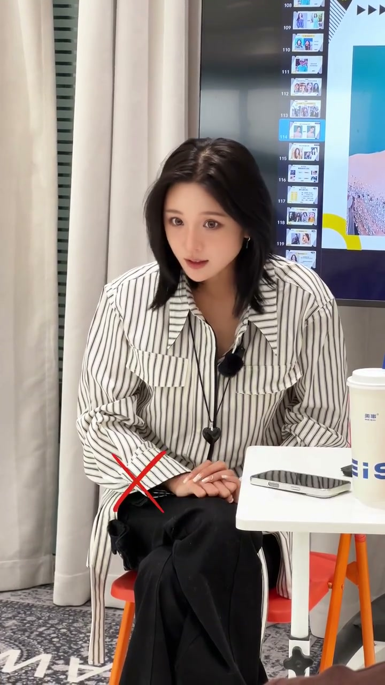

内容要点
[00:00] 眼睛为什么看起来没有力量感
[00:01] 甚至有的时候我们会被摄影师提醒
[00:04] 眼睛有劲一点
[00:05] 有力量一点
[00:06] 你们知道你们会做什么反应吗
[00:10] 我有力了吗
[00:12] 我现在怎么样有劲了吧
[00:13] 你越挣大就越没内容
[00:16] 这个眼神的力量感穿透力
[00:18] 跟你的眼皮是并没有关系的
[00:21] 你的眼皮不管使了多少劲
[00:23] 你眼睛都不会有劲的
[00:25] 难问题来了
[00:26] 那眼睛的力量感到底指的是什么
[00:28] 我们就一块去请喜欢
[00:30] 玩一次那个穿针引线的游戏
[00:32] 拿起那根针
[00:34] 现在你的目标把你这根线
[00:36] 塞到这里
[00:37] 我们去体验它
[00:38] 你有没有感觉自己的整个的注意力
[00:41] 和眼神是汇聚在一个
[00:43] 这种空气中的点上的
[00:44] 你刚才认真看那个针的时候
[00:46] 有没有感觉自己的眼睛
[00:47] 是冲营的
[00:48] 就是这感觉
[00:49] 是不是以后能不叫我们
[00:50] 按眼神有力量
[00:51] 我们就不过是一块
[00:52] 差不多
[00:53] 这个就叫做眼神的发力
[00:56] 而不是
[00:57] 你刚才穿针的时候没瞪眼皮吧
[00:59] 它只需要专注的去看一下一个点
[01:01] 那个穿透感就来了
